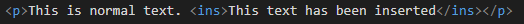

This element defines text that has been inserted into a document. Browsers will display this underlined.
This is usually done after the delete element has been used.
This is normal text. This text has been inserted
This is how its coded:
cite - Specifies a url to explain the reason why the text was inserted
datetime - specifies the datetime of when the text was inserted.
The global attributes are supported.
The event attributes are supported.